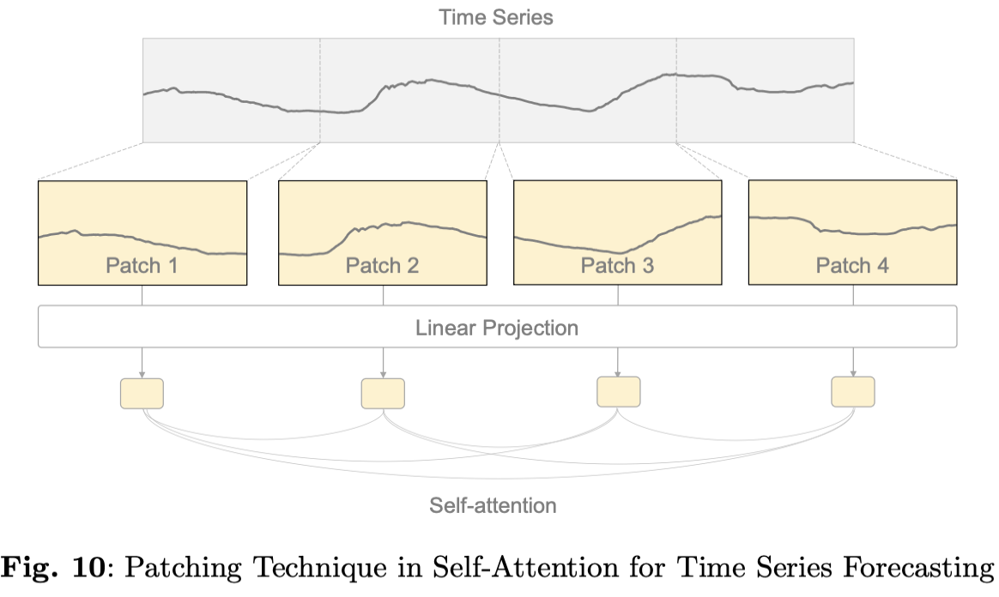
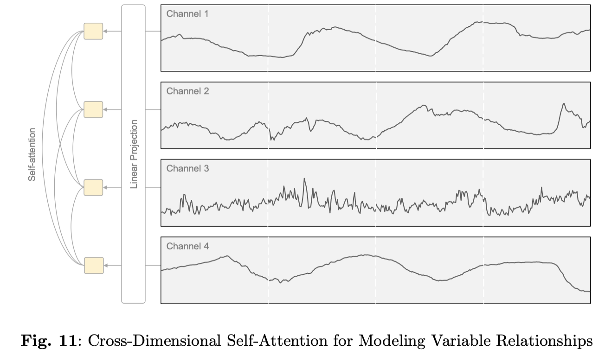
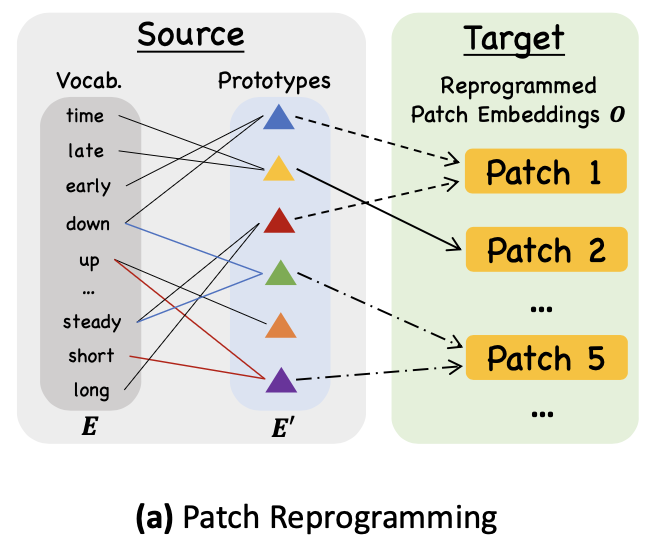
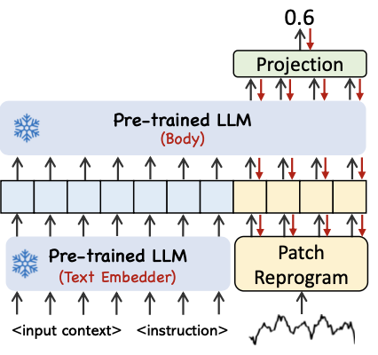

SURVEY NOTE · 2025-09-04
时间序列调研：方法脉络、大模型范式与模型空间实践
目录导航
- 一、时序背景介绍（概念与数据特性 · 四类任务 · 核心痛点总结）
- 二、大模型之前的方法发展脉络（统计与传统 DL · Transformer 与归纳偏置 · 线性可赢 · Diffusion · SSM 与 Mamba）
- 三、大模型时代的时序分析（模态对齐 Time-LLM / TimeCMA · 原生基座 Chronos / TimesFM / Time-MoE · Agent 视角 TS-Agent / FLAIRR-TS）
- 四、过往科研工作总结（模型空间学习 MSL · ESN 理论与岭回归 · SpaDyn / SARC / 连续时间伴随学习）
一、时序背景介绍
1.1 概念定义与数据特性
什么是“时间序列”？简单说就是按时间顺序排列的数据，比如每天的气温、每小时的电力消耗、股票的实时价格。
- 单变量数据特性：时序数据本身具有顺序性、自相关性、趋势、季节性、周期性、异常值、不规则采样与不平稳性。

- 多维特性：多变量时间序列还叠加了变量间依赖性、受外源潜在变量影响以及上下文信息等多源因素。

1.2 时间序列任务分类
分类（Classification）
根据整个序列的模式将其归入某一类别，常用于故障诊断、行为识别等领域。主要挑战在于：单次观测往往信息有限，必须依赖时序动态模式进行判别；同时不同类别序列常存在对齐与变长问题。

早期方法：依赖距离度量 + 模板匹配，或手工特征提取 + 传统分类器，对复杂模式泛化性弱。
机器学习方法：SVM、频域分析提升了分类效果，但捕获长时依赖与非线性动态受限。
深度学习方法：CNN 擅长局部特征但长依赖较弱；RNN/LSTM 存在梯度消失或爆炸；Transformer 对数据量要求高、计算效率偏低。
异常检测（Anomaly Detection）
在时间序列中发现不符合正常模式的异常点或异常片段，广泛用于工业设备监测、网络安全与医疗监护。本质上与分类任务类似（极端不平衡的二分类）。

主要难点在于：异常样本稀少且形态多样，难以获得充足标签；异常嵌藏在大量正常数据中，极低先验概率导致监督学习严重偏斜；同时异常定义依赖场景且会随时间演化（概念漂移），要求模型持续自适应。
传统方法：基于统计阈值与信号处理（频谱分析）。
机器学习方法：One-Class SVM、Isolation Forest、无监督聚类。
深度学习方法：基于预测残差或自编码器重构误差进行阈值判别。
预测（Forecasting）
根据历史观测预测未来值，在金融、供应链与气象等领域尤为关键。核心挑战在于趋势与季节性耦合、多步预测误差累积以及多变量关联。

经典统计方法：ARIMA 等结合自回归与滑动平均，解释性强、数据需求少，但仅在平稳/简单结构上有效。
机器学习方法：滑窗构造回归任务，过去观测为特征、未来值为标签。
深度学习方法：从 Seq2Seq 多步预测演进至专用 Transformer（如 Informer），但在中小规模特定数据集上常面临过拟合与强数据依赖。
生成建模（Generation）
学习时间序列的数据分布以合成逼真序列，应用于场景模拟、数据扩增与隐私数据合成（如合成语音、金融路径模拟）。本质上与概率预测任务相通。

主要挑战包括：需同时捕捉短期相关与长期结构；未来演化高度不确定且往往呈多峰分布，要求模型表达多模态输出；且缺乏统一客观的评估指标，比图像保真度更难量化衡量。
1.3 时序问题的痛点总结

数据层面共性问题
- 采样不规则、缺失与对齐：现实采样常存在间隔不等、变量异步、量纲变化与缺失值；预处理不当会直接扭曲真实分布。 例：医疗健康中生命体征、检验与用药异步采样，存在大量“信息性缺失”（测不到或不测本身往往包含临床信号），且随病程显著非平稳。
- 分布漂移（Distribution Shift）：非平稳性是时序最具挑战的痛点，具体分为协变量漂移（输入分布变）、先验概率漂移（目标分布变）和概念漂移（输入与输出关系变）。 例：工业传感器维护中负载、转速与工况频繁切换，跨机型/批次域间差异显著，设备寿命呈“运行到失效”的长尾形态。
- 尺度依赖与长序列建模：真实序列跨越长时间尺度，同时交织高频局部波动与缓慢全局趋势。 例：股票价格同时包含毫秒/分钟级日内交易噪声与季度/年度宏观周期；交通流兼具早晚高峰与长期城市出行演变。
- 多变量关联与外生驱动：变量间时滞相关、共因与混杂使“相关 ≠ 因果”。 例：电力价格强依赖市场供需与政策调度，仅凭历史曲线本质上无法独立预测未来走势，金融市场同理。
- 标注稀缺与指标–价值错位：异常极少、标注昂贵且高度依赖业务定义，公开基准往往难以覆盖真实复杂性，直接迁移容易出现离线指标高但业务无效的错位。
任务相关的特定痛点与解法对照
| 任务类型 | 核心挑战 | 常用解决方案 |
|---|---|---|
| 分类 | ① 动态模式主导、单点判别力弱 ② 变长与相位错位导致比对困难 ③ 小样本/跨域泛化差 |
传统：1NN+DTW 动态对齐、手工特征+SVM 深度：CNN 提取局部模式、原型学习 技巧：序列对齐、Patch 分块 |
| 预测 | ① 趋势/季节与短期扰动并存 ② 多步误差累积 ③ 长序列计算负担 ④ 多变量/外生驱动与分布漂移 |
统计：ARIMA/ETS 分解 + 线性回归 深度：LSTM 门控、Transformer 注意力 新兴：线性分解模型（LTSF-Linear）、扩散模型 策略：模型集成、滚动再训练、Patch 化 |
| 异常检测 | ① 极端不平衡与多样形态、标签稀缺 ② 概念/工况演化致阈值失稳 ③ 评测需兼顾早检出与误报成本 |
无监督：Isolation Forest、One-Class SVM 深度：预测残差、自编码器重构误差 自适应：动态阈值调整、概念漂移监测 |
| 生成建模 | ① 多峰/多模态未来、不确定性高 ② 长程一致性与物理/业务约束 ③ 质量评估缺乏统一指标 |
传统：HMM 隐马尔可夫、状态空间模型 深度：TimeGAN、VAE 扩散：TimeGrad 概率预测、CSDI 条件生成 |
二、大模型之前的方法发展脉络
从 20 世纪后期的统计模型（ARIMA、HMM），到 21 世纪初的机器学习（SVM、随机森林），再到近十年的深度学习（RNN/LSTM、CNN、Transformer、Diffusion、SSM/Mamba），整体演化呈现出四条清晰趋势：
- 从手工到自动：特征工程 → 端到端表示学习
- 从单一到混合：单模型 → 集成 / 多尺度 / 分解式组合
- 从确定到概率：点预测 → 分布与不确定性建模
- 从固定到自适应：静态模型 → 在线学习与概念漂移适应


2.1 传统统计、机器学习与早期深度学习
最早的预测以指数平滑、ARIMA/SARIMA为代表，依赖平稳性与线性自回归/滑动平均假设；树模型与 SVM 刻画了部分非线性，但仍难以充分建模复杂长期依赖与多变量交互。深度学习阶段：
- RNN / LSTM：以顺序递归和门控记忆减轻梯度问题、增强长依赖，但受串行计算瓶颈制约；
- TCN / CNN：以空洞卷积与多尺度感受野高效提取局部周期特征；
- GNN：显式将多变量通道建模为图结构，联合学习时空相关性。
2.2 Transformer 与时序归纳偏置增强
自注意力擅长建模序列长程依赖（注意：时序里的长序列与 LLM 长上下文在信息密度和尺度上不在同一量级）。围绕“注意力可扩展性 + 时序归纳偏置”，改进主要集中在三个方向：
- Patching：把相邻时间点打包为子序列 Patch，既降低注意力长度，又强化局部语义与长距离预测；
- Cross-dimension：显式建模跨通道相关性与多尺度结构；
- Exogenous & 稀疏/频域注意力：引入外生条件先验、稀疏化与频域变换，贴合多变量异质分布。



Autoformer 核心机制：Encoder 每次分解都将趋势–循环成分剥离，保留更“纯”的季节表示；Decoder 并行把各层分解出的趋势分量经投影器累加到“趋势累积”分支，再与季节预测相加。

与后来的大模型不同，这一代时序 Transformer 依然是在单个确定数据集上端到端训练的小模型。
2.3 「线性可赢（Linear Wins）」与 Advanced Traditional DL
随后一个关键转折出现：Zeng 等人（LTSF-Linear, AAAI 2023）发现，极简单的线性/分解模型在多个长时序预测（LTSF）基准上追平甚至击败了复杂的 Transformer，引发整个社区重新思考“什么才是时序真正有效的归纳偏置（Inductive Bias）？”
时序建模中的归纳偏置（Inductive Bias）
归纳偏置指模型先验带入的结构假设：RNN/LSTM 偏向严格的时间顺序递推与门控记忆；CNN/TCN 偏向局部邻域与多尺度周期规律；LTSF-Linear（DLinear / NLinear） 偏向直接提取趋势 + 季节分量并严格保持时间位置顺序（而标准自注意力本身是置换等变的，仅靠位置编码难以保真单调时序顺序）。
在“线性可赢”的启发下，研究转向对 MLP / CNN / RNN / GNN 做轻量化、混合式与模型无关（model-agnostic）改造——所谓“模型无关”，是指分解、归一化、频域变换等特征策略不绑定特定主干，可跨架构复用：

- InceptionTime（多尺度 1D CNN + 残差）：每个 Inception 模块先经 Bottleneck（1×1 卷积）沿通道维把通道从 $M$ 压缩到 $m$（图示 $m=1$），再并行接入长度 $l \in \{10, 20, 40\}$ 的三组 1D 时间卷积与一条 MaxPooling 分支，最后沿通道拼接输出。

- TimesNet (ICLR 2023)：先通过 FFT 找出序列的显著周期，将 1D 时序按周期折叠成 2D 张量（行内为周期内变化、列间为跨周期变化），从而直接复用高效的 2D 视觉卷积主干统一建模多周期变化。

2.4 概率生成视角：Diffusion Models
扩散模型通过“正向加噪 → 反向去噪”两步生成：前向过程对真实未来片段逐步注入高斯噪声；反向过程从纯噪声出发，用去噪网络一步步恢复未来序列。DDPM 的核心是学习单步噪声估计器 $\hat{\epsilon}_\theta(x_t, t, c)$，采样时按噪声日程逐步减噪回归数据分布。

时序扩散研究沿着“条件怎么喂（历史编码、未来先验）”与“特征怎么抽（分解/频域/多尺度）”两条线推进。与回归式的 DL/Transformer 不同，Diffusion 把预测建模为概率分布生成问题，天然更适合多峰、高不确定性的未来预测。
2.5 状态空间模型（SSM）与 Mamba
离散状态空间模型（SSM / S4）将序列建模还原为一个线性时不变（LTI）系统的卷积问题，兼具“长依赖 + 近线性效率”：

将递推逐步展开，输出可直接写为输入与卷积核 $K_k = C A^k B$ 的全局卷积：
$$y_t = \sum_{k \ge 0} K_k u_{t-k} + D u_t, \qquad K_k = C A^k B$$SSM 为什么同时具备「长记忆」与「高效率」？
- 谱衰减与多尺度记忆：矩阵 $A$ 的特征值控制历史衰减速率——当 $|\lambda| < 1$ 时按 $\lambda^k$ 衰减；$|\lambda|$ 越接近 1 衰减越慢（长记忆），较小则快衰减（短记忆）。一组不同特征值自然构成多时间尺度记忆机制，配合 HiPPO 正交多项式基可实现理论最优历史压缩。
- 计算效率：RNN 需串行递推 $O(T)$；Transformer 全局注意力需 $O(T^2)$；SSM 在 LTI 假设下等价于 $y = K * u$，借助 S4（NPLR + Cauchy 核）与 FFT / 并行扫描，能以 $O(T \log T)$ 甚至 $O(T)$ 一次性并行计算整条序列。
但纯 LTI-SSM 参数固定、缺乏输入自适应能力，在信息稠密的离散序列上偏弱。Mamba 提出选择性 SSM（Selective SSM），令 $\Delta_t, B_t, C_t$ 随当前输入动态变化：遇到无关噪声时放大 $\Delta_t$ 重置/忽略状态，遇到关键信息则缩小步长保持长时记忆，由此得到内容依赖的动态滤波器与高吞吐无注意力主干。

小结：大模型前的演进脉络清晰——更强的非线性刻画、更长的多尺度记忆、更少的人工特征干预，以及从点预测走向不确定性分布建模。
三、大模型时代的时序分析
“Can large pretrained models trained on massive amounts of time-series data learn temporal patterns that can be useful for time-series forecasting on previously unseen datasets?”
3.1 核心动机与根本挑战
| 维度 | 核心要点 |
|---|---|
| Motivation（动机） |
① Zero-shot 泛化：跨领域、跨频率、跨变量的零样本迁移； ② Few-shot 数据效率：参数高效微调在少标注场景超越单域专模； ③ Prompt 与推理增强：用自然语言上下文引导预测并提升可解释性； ④ 多模态融合：联合建模数值曲线、元数据与外部事件文本。 |
| Challenge（挑战） |
① 模态对齐鸿沟：连续、高噪、非平稳数值流 vs. 离散、语义稠密自然语言； ② 离散化信息损失：量化词表虽便于复用 LLM 与概率采样，但存在数值精度折损； ③ 归纳偏置错配：纯语言先验未必天然利好纯数值动力学预测，本质仍是未彻底解决的对齐难题； ④ 预训练语料与统一基准短缺：高覆盖、多域、多频率公开时序语料仍相对稀缺。 |
3.2 范式一：冻结/微调通用 LLM + 模态对齐
Time-LLM (ICLR 2024)
保持预训练 LLM 主干完全冻结，通过输入重编程（Reprogramming）把连续时序映射到语言词向量空间，再配合 Prompt-as-Prefix（PaP）引导推理，最后经输出投影头还原回数值预测。

- Patch Reprogramming：从 LLM 词表嵌入中线性投影筛选出一小组“文本原型（Text Prototypes）”作为基底，用交叉注意力对每个时序 Patch 做加权重构。这些原型可隐式对应“short up / steady down”等语义线索，以组合方式编码局部形态。


- Prompt-as-Prefix（PaP）：前缀提示由三部分构成——dataset context（数据集背景）、task instruction（任务指令）与input statistics（最小/最大/中位数/趋势/滞后等统计量）；前向传播后丢弃前缀输出，仅对时序部分隐状态做线性投影。

实验结论：在电力（ETT/ECL）、天气、交通等标准基准上，Time-LLM 在长预测窗口、少样本（5%–10% 数据）与零样本跨域迁移（A 域训练直接测未见 B 域）上整体优于传统专用模型与早期 LLM 适配方法。
TimeCMA (AAAI 2025)
面向多变量时间序列预测（MTSF），采用“双支路编码 + 通道级跨模态对齐 + 多变量解码”架构，避免 Time-LLM 直接拼接带来的模态干扰与推理高开销：

- 双模态编码：① 时间序列编码器（TSE）用轻量 Transformer Encoder 按变量独立编码数值历史，得到 $H_T \in \mathbb{R}^{C \times N}$；② LLM Prompt 编码把变量数值写成提示输入冻结 GPT-2，仅取最后一个 token 表征 $L_N \in \mathbb{R}^{N \times E}$ 并离线缓存，训练和推理时直接复用以大幅降低计算成本。
- 通道级相似度检索对齐（Channel-wise Similarity Retrieval）：以 TSE 输出作查询 $Q$，LLM 末 token 缓存作键值 $K, V$，沿通道–嵌入维度检索聚合语义表征并残差融合回数值分支：
- 预测头与实验结果：对齐后的 $H_C$ 送入多变量 Transformer 解码器（含自注意与跨注意）捕捉跨变量长程依赖，经线性投影与反归一化输出未来 $M$ 步预测。实验表明，相比直接拼接（Time-LLM、OFA 等），通道级检索对齐在 ETT、ECL、Weather、ILI 等多变量基准上误差更低且效率显著提升。
3.3 范式二：原生时序基础模型（Time Series Foundation Models）
Chronos (TMLR 2024)
Amazon 提出的原生时序语言模型路线：不强行对接自然语言，而是通过 Mean Scaling + 等距量化把实值曲线映射为有限离散词表上的 token 序列，直接用标准 T5 或 GPT-2 架构做 Next-Token Prediction；推理时自回归多次采样并反映回实数空间，天然输出概率分布预测。

Chronos 量化与训练目标
对上下文序列先做均值绝对值缩放 $s = \frac{1}{C}\sum_{i=1}^{C}|x_i|$，在 $[-15, +15]$ 区间划分 $B = 4096$ 个等距 Bin（中心为 $c_j$），量化映射为 $q(x) = \arg\min_j |c_j - x|$，再加入 PAD 与 EOS 构成词表 $V_{\text{ts}}$。训练直接最小化多类交叉熵：
推理阶段把采样的 token $z$ 映射回箱中心 $d(z) = c_z$ 再乘以尺度 $s$ 还原实值。Chronos 简洁稳健，但不具备通用自然语言理解能力，且量化会带来一定精度折损。
TimesFM (ICML 2024)
Google 提出的统一零样本预测器 $f: (y_{1:L}) \to \hat{y}_{L+1:L+H}$，目标是在未知数据集上无缝适配任意历史长度 $L$、预测步长 $H$ 与采样频率（分钟/小时/日/周/月）。
- 输入 Patch 残差映射：每个长度为 $p$ 的输入 Patch 经带跳连的单隐层 MLP 投影到
model_dim，叠加位置编码送入主干； - Decoder-only Transformer：标准因果掩码自注意力，第 $j$ 个输出仅关注自身及之前 Patch；
- 非对称大输出 Patch（$h > p$）：每个输出 token 通过残差块一次预测后续 $h$ 个时间步（如输入 $p=32$、输出 $h=128$），显著减少自回归轮数与误差累积，并在下一轮取生成片段作为输入 Patch 交叉衔接。
实验结论：约 200M 参数在约 100B 时间点（真实 + 合成数据）上预训练，在多项未见数据集的零样本预测精度已逼近针对单数据集全监督训练的专用模型。

Time-MoE (ICLR 2025)
以 Decoder-only Transformer + 稀疏 MoE 为主干，采用逐点嵌入、RMSNorm、RoPE、Top-k 路由 + 共享专家，在同等激活算力下把总参数容量推至十亿级；输出端用多分辨率预测头 + 贪心调度支持任意步长，在大规模语料 Time-300B 上以 Huber 损失 + 负载均衡辅助损失训练。


3.4 范式三：Agent 视角（规划、检索与反思工作流）
本质上，预测与分类都是为下游决策服务的。相比硬让语言模型直接预测浮点序列，把专业时序工具库、结构化知识库与反思循环交由 Agent 编排，能同时兼顾可解释性与领域可靠性：
“a planner agent equipped with structured knowledge banks, curated libraries of models and refinement strategies, which guide exploration, while improving interpretability and reducing error propagation.”
TS-Agent (2025.08)
面向金融时间序列的模块化智能体框架，将建模工作流形式化为“模型选择 → 代码细化 → 超参微调”的迭代决策闭环，依赖三类结构化外部知识库约束搜索空间：

- Stage 1（模型预选）：通过 Case Bank 做相似任务检索（CBR），筛出 Top-k 候选模型并在
train.py中实例化； - Stage 2（代码细化）：采用 Warm-up / Optimization 两阶段轮转搜索，围绕当前最优候选持续做“代码细化 + 超参微调”，验证指标提升则保留，否则回退。注意：真正训练更新参数的是底层任务模型（
train.py），Agent 本身不更新权重，只做检索、编辑、执行与决策编排。

实验结论：在加密货币、外汇与美股等金融任务上，TS-Agent 在预测精度、风控一致性与流程成功率上均优于 AutoML 及通用 Coding Agent 基线。
FLAIRR-TS (2025.08)
目标是在完全不微调权重的前提下，通过“可解释外部检索 + 在线提示词迭代优化”动态适配新领域。整个系统由三个协作角色构成测试时优化闭环：

- Retriever：按皮尔逊相关系数从训练集滑窗历史库中召回 Top-M 最相似片段及其真实后续走势，作为“类比演化示例”拼入增强上下文 $C_{\text{aug}}$；
-
Forecaster：基于当前提示词与 $C_{\text{aug}}$ 生成未来 $H$ 步预测，强制输出结构化字段
Predicted Values: [v1, v2, …]，同时给出Reasoning、Certainty Estimate与Certainty Reasoning； - Refiner：扮演“元优化器”，复盘过往“提示词 → 预测误差”轨迹，迭代改写提示词并在验证集不再改善时触发早停。
四、过往科研工作总结：模型空间学习与储备池计算
4.1 模型空间学习（Model Space Learning, MSL）
1. 为什么要从“数据空间”转向“模型空间”？ 真实工业与物理时序往往同时存在噪声大、采样不齐、序列变长、样本稀缺、工况漂移。直接在数据空间训端到端大网络代价高且解释性弱；而常见插值/重采样又会扭曲原始动力学变化。MSL 的核心思路是绕开数据层面的坑：把每条序列先映射为一个能生成它的轻量动力学模型，再在模型的参数或函数空间里做度量与判别。
2. 流程三步走：
- 模型化表征（单序列拟合）：为每条序列单独拟合一个轻量生成模型（如 ESN / ODE-ESN / AR / 状态空间模型），以“拟合好的模型本身”作为序列表示；
- 构建模型度量：既可直接拼接读出参数向量（如 $W_{\text{out}}$）计算欧氏/马氏距离，也可把模型视作函数 $F(\cdot, \Theta)$ 计算函数空间距离 $\|F(\cdot, \Theta_1) - F(\cdot, \Theta_2)\|$；
- 判别式学习：在模型特征或模型距离上训练轻量分类器/度量学习器，获得抗噪、对采样和长度不敏感、少样本也稳健的表征。

4.2 回声状态网络（ESN）理论与岭回归闭式拟合
回声状态网络（Echo State Network, ESN）是一类高效的离散递归神经网络：输入权重 $W^{hx}$ 与储备池内部权重 $W^{hh}$ 随机初始化后全程固定，只训练线性读出权重 $W^{yh}$，从根源上规避了传统 RNN 反向传播的梯度消失问题。

设输入层有 $K$ 个单元、储备池有 $N$ 个非线性神经元、输出层有 $L$ 个单元：
$$x(n) = \big(x_1(n), \ldots, x_K(n)\big)^{\top}, \quad h(n) = \big(h_1(n), \ldots, h_N(n)\big)^{\top}, \quad y(n) = \big(y_1(n), \ldots, y_L(n)\big)^{\top}$$储备池隐状态随时间按如下递推演化（激活函数 $g(\cdot)$ 通常取 $\tanh$）：
$$h(n) = g\big(W^{hh} h(n-1) + W^{hx} x(n)\big)$$为保证动力学稳定性，储备池必须满足回声状态性质（Echo State Property, ESP）——历史输入对当前状态的影响随时间衰减，实践中通过缩放谱半径 $\|\lambda_{\max}\|$ 实现：
$$W^{hh} \leftarrow \frac{\alpha W^{hh}}{\|\lambda_{\max}\|}, \qquad 0 < \alpha < 1$$收集整条序列对应的隐状态矩阵 $H$ 后，直接通过岭回归一步求得读出权重的闭式解（$\lambda > 0$ 为正则化系数）：
$$W^{yh} = \big(H^{\top} H + \lambda^2 I\big)^{-1} H^{\top} Y$$4.3 三项代表科研工作总结
1. SpaDyn：融合视觉与动态特征的时序异常检测（IEEE TGRS 2024）
- 问题：2D/3D 探地雷达（GPR）信号中，空间形态结构与回波时序动力学耦合不足，单看图像或单看波形均易漏检与误报；
- 方法：先用视觉目标检测提取空间特征并定位候选异常区域，再沿水平与垂直两个方向提取局部回波动力学特征拟合多方向储备池网络，在模型空间中完成最终异常判别。

2. SARC：频谱感知储备池时序分类（ICML 2025）
- 问题：传统储备池计算对多尺度频谱结构及“顺序 + 周期”双通道动力学利用不足；
- 方法：先用 HP 滤波去趋势，经小波与 FFT 筛选显著主频，再以主频为周期构造循环滞后状态（顺序连接 $W_s$ + 周期连接 $W_c$），通过岭回归读出并拼接多频动态特征完成分类（双向 BiESN 取得最优表现）；
- 实验结果：在 128 个 UCR / UEA 标准时序分类数据集上实现了高准确率与极高训练/推理速度的兼得。

3. 连续时间伴随模型空间学习：不规则序列故障诊断（AAAI 2026）
- 问题：在采样不规则、工况变化的连续物理动力学场景下，离散时间 RNN/ESN 依赖插值会损失动态信息，且直接训练梯度传播不稳定；
- 方法：将 ESN 推广为连续时间微分方程动力学，并在模型空间中采用伴随法（Adjoint Method）实现显存友好、数值稳定的神经微分方程优化，直接处理原生不规则序列故障诊断。